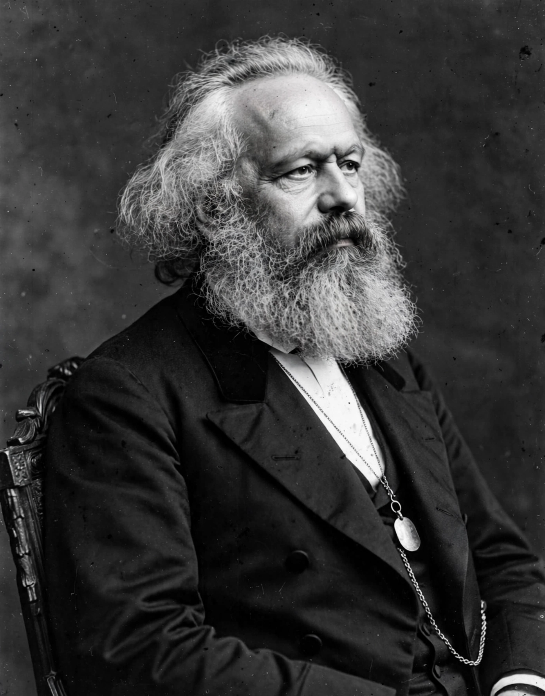

From Wikipedia, the free encyclopedia
| Karl Marx | |
|---|---|
| Born | 5 May 1818, Trier, Prussia |
| Died | 14 March 1883, London, England |
| Era | 19th-century philosophy |
| Main interests | Political economy, history, sociology |
| Notable works | The Communist Manifesto (1848, with Engels); Das Kapital (1867) |
| Notable ideas | Historical materialism; class struggle; alienation; surplus value |

Karl Marx (1818–1883) was a German philosopher, economist, historian and revolutionary socialist whose critique of capitalism — developed with Friedrich Engels — became the theoretical basis of Marxism and of socialist and communist movements worldwide. His analysis of history as class struggle, and of capital as accumulated alienated labour, reshaped the social sciences regardless of readers' politics.
Born in Trier to a middle-class family of Jewish origin converted to Lutheranism, Marx studied law and philosophy, joining the Young Hegelians and taking a doctorate in 1841. Journalism radicalised him: he edited the Rheinische Zeitung, was expelled from Prussia, Paris and Brussels, and settled in London in 1849, researching in the British Museum Reading Room. With Engels he wrote The Communist Manifesto (1848) ('Working men of all countries, unite!'); his mature economics culminated in Das Kapital (1867), whose later volumes Engels edited posthumously. He helped found the International Workingmen's Association (First International) in 1864.
Historical materialism holds that a society's economic base — forces and relations of production — shapes its laws, politics and ideas. Marx analysed commodity fetishism, surplus value extracted from labour, and capitalism's tendency to crisis and concentration. His early writings on alienation, published only in 1932, influenced existentialist and humanist readings; governments invoking his name in the 20th century made him among history's most consequential — and contested — thinkers.